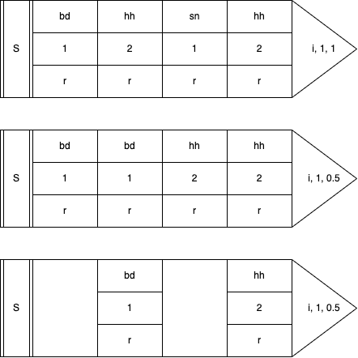

Senders
The second most important aspect of Sardine is the concept of Senders. Senders are the main objects used to communicate with the outside world. There are three basic senders:
-
Sound Sender: play sounds/synths using SuperCollider and the SuperDirt engine.
-
MIDI Sender: trigger/control MIDI capable software / hardware.
-
OSC Sender: send or receive Open Sound Control messages.
Naturally, people are thinking about adding more and more senders. Hopefully, Sardine will make integrating new senders easier as time goes by. For now, these three I/O tools cover most of the messages used by live-coders and algoravers. Python packages can be imported to deal with other things that Sardine is not yet covering. You can turn the software into an ASCII art patterner or hack your way around to deal with DMX-controlled lights.
You will see that learning how to swim was kind of the big deal. Things will now be easier to learn. Senders and swimming functions are enough to already make pretty interesting music. The rest is just me sprinkling goodies all around :)
I - Anatomy of Senders
A Sender is an event generator. It describes one event. This event can mutate depending on multiple factors such as patterns, randomness, chance operations, clever Python string formatting, etc... A single sender can be arbitrarily long depending on the precision you want to give to each event. This object will only take one method: .out(). Wait? A long object, and a tail method? Does it ring a bell? It looks... just like a sardine.
/`-._ /`-._
_/,.._/ _/,.._/
,-' , `-:,.-') _ ,-' , `-:,.-') _
: S(...):'; _ { .out(_) : M(...):'; _ { .out(_) ... and more
`-. `' _,.-\`-.) + `-. `' _,.-\`-.) +
`\\``\,.-' `\\``\,.-'
Writing the body
Every sender (M(), O(), S()) is an object taking arguments and keyword arguments. Arguments are mandatory, and keyword arguments optional. These arguments will define your event:
S('bd', speed='[1:2,0.5]', legato=1, shape=0.5) # Heavy drumbass
M(note='C@min7^1', dur=2, channel=0) # Short MIDI chord
You will have to learn what arguments each sender can receive. They all have a speciality. Despite the fact that they look and behave similarly, the event they describe is very different in nature depending on the type.
Warning
Note that Sardine is still missing some pieces. There is currently no way to easily pattern some very common MIDI messages such as control changes, program changes, etc... Don't worry! You can still pattern all of this very easily by doing cc(control=P('0,1,2',i), value=P('1~127')). It's a just a bit more verbose compared to what it could be if ever I was feeling like adding this to the codebase! It will eventually happen, I promise!
Precising the tail
The tail of a sender is always the .out() method. Without it, no message is sent. We have already seen the tail in the swimming functions section. If you are here because of it, you've found the right place to look at! The .out() method takes three arguments:
-
i(int): the iterator for patterning. Mandatory for the two other arguments to work properly. This iterator is the index of the values extracted from your linear list-like patterns (your arguments and keyword arguments). How this index will be interpreted will depend on the next two arguments. -
div(int): a timing divisor. It is very much alike a modulo operation. Ifdiv=4, the event will be emitted once every 4 iterations. The default isdiv=1, where every event is a hit! Be careful not to set adiv=1on a very fast swimming function as it could result in catastrophic failure / horrible noises. There is no parachute out in the open sea. -
rate(float): a speed factor for iterating over pattern values. It will slow down or speed up the iteration speed, the speed at which the pattern values are indexed on. For the pattern1, 2, 3and a rate of0.5, the result will be perceptually similar to1, 1, 2, 2, 3, 3.
I know, it doesn't make any sense written like so.. That's something you have to see represented differently. Take a look at tail arguments values. Notice how different values will produce different iteration speeds:

Now, try exploring this idea using this dummy pattern:
@swim
def ocean_periodicity(d=0.5, i=0):
S('bd, hhh, sn, hhh', speed='1,2', freq='r*800').out(i, 2, 0.5)
a(ocean_periodicity, d=0.5, i=i+1)
.out() method. Try to be more familiar with it. You can change the recursion speed to notice more clearly how the pattern will evolve with time.
Tips for writing Senders
Python is extremely flexible and expressive. The language makes it a breeze to compose arguments and keyword arguments in very fun and creative ways. I don't even have to code anything to support this and I'm very grateful that the language takes care of everything for me! Let's take an example. You can for instance store parameters common to multiple messages in a list/dictionary before sticking them to your patterns using the * and ** idiom:
params = {'loud': {'amp': 2, 'shape': 0.9}, 'soft': {'amp': 0.1, 'legato': 0.1}}
S('bd', **params['loud'])
There is also a hidden benefit to separating the .out() method from the object initialisation. You can store events somewhere without having to send them immediately. :
These examples look very verbose, but try to imagine cases where they will save you from an even more verbose situation. It can happen very quickly when you try to play with many events at the same time, or when you will start imagining grouping sounds together or modifying multiple parameters in different events at the same time.
II - The Sound Sender
The Sound or SuperDirt sender is a sender specialised in talking with SuperCollider and more specifically with the sound engine used by TidalCycles. I'm using the synthesis / sampling backend written and supported by Julian Rohrhuber that many live-coders worldwide are also using. It is very stable, very flexible and highly-configurable.
This sender is the most complex you will have to interact with and it is entirely optional if you wish to use Sardine only to sequence MIDI and OSC messages. If we dive into its architecture, we will soon find out that this sender is a specialised OSC sender that talks exclusively with SuperDirt using special timestamped messages.
The body of the sender is always:
The first argument defining the sound or synthesizer you are willing to trigger is not optional. Without it, you can be sure that the sender will crash because it cannot apply parameters to something that is not defined. The keyword parameters are the names of your SuperDirt parameters. It can be standard parameters, orbit parameters (audio bus) or parameters related to the synthesizer you are using. You will find more about this in the Reference section that is listing pretty much all of them!
You will feel a bit lost at first but this is a case where you learn a lot by doing and from experience. Take a look at the following examples.
Simple Bassdrum
A simple bassdrum playing on every half-beat. This is the most basic sound-making function you can write.Complex Bassdrum
A simple bassdrum but some parameters have been tweaked to add some randomness to the result. See how patterns can be used to make your keyword arguments more dynamic. The additional parameters are :speedwill reverse (<0), slow (0-1), or accelerate the sample (>1) by altering the playback speed. Thertoken provides randomization between0.0and1.0(float).legatodefines the maximum duration of the sample before cutting it, here randomized in the0to1range.cutoffwill attenuate some frequencies. This is the cutoff frequency of a lowpass filter that shuts down frequencies higher to the frequency cutoff. The cutoff frequency is guaranteed to be at least100plus a certain amount between0and4000.
Simple Breakbeat
Picking a random sample in a folder containing slices of the classic amen break. You could have a successful career doing this in front of audiences. Once again, the magic happens with thesample:r*X notation, which randomizes which sample is read on each execution, making it unpredictable.
Sample sequencing
Your classic four-on-the-floor written on one line. One sound is played after the other. All arguments and keyword arguments can be patterned.Piling up / Polyphony
@swim
def pluck(d=0.5, i=0):
S('pluck').out(i)
S('pluck:1').out(i)
S('pluck:2').out(i)
S('pluck:3').out(i)
again(pluck, d=0.5, i=i+1)
You can stack events easily by just calling S() multiple times. In the above example, it happens that pluck samples are nicely order and are generating a chord if you struck them in parallel. How cool! But wait, there is more to it:
You can also stack sounds by using polyphony. With Sardine, polyphony is not a concept reserved to notes. Every pattern can be polyphonic (sample names, speeds, adresses, etc...).
More examples...
Check out the Demos section to find out how people are using the S sender.
II - MIDI Sender
The MIDI or M sender is a sender specialised for emitting MIDI note-on and note-off messages just like on a music tracker or DAW. It does not have a lot of arguments, and if you have some degree of familiarity with the MIDI protocol, you will feel at home pretty quickly:
-
note: your note number, between
0and127. You can of course use patterns, and patterns can be patterns of notes (special syntax for writing chords, scales, notes, etc...). Values are clamped. If you enter an incredibly big number, it will be clamped to127. The same thing goes for small or negative numbers that will be brought back to0. -
channel: your MIDI channel from
0to15(1to16in human parlance). -
velocity: amplitude of your note, between
0and127. -
dur: duration of your note. Time between the note-on and note-off messages. This time, unlike almost everything else, is calculated in clock ticks.
dur=40means that the note-off will only come after 40 clock ticks, which can be a long time or a very short time depending on your current timing context. You will notice that the Link clock is ticking really fast compared to the MIDI one.
That's it! You might wonder: where are my other MIDI messages? We got them covered too and you can pattern them of course. For now, the syntax is a bit old school and each MIDI message will have its own function but it won't last long :)
cc(channel: int, control: int, value: int): control change message.pgch(channel: int, program: int): program change message.pwheel(channel: int, pitch: int): pitch wheel message.sysex(data: list): custom SYSEX message.
My plan is to cover all of the messages. The page will be updated later with a new MM() Sender specialised in custom MIDI messages.
Sending a note
No argument required to send a MIDI Note (60) at full velocity (127) on the first default MIDI channel. Arguments are only used to specify further or to override default values.
Playing a tune
Playing a little melody by tweaking thenote argument.
A bit better
@swim
def midi(d=0.5, i=0):
M(channel='0,1,2,3',
velocity='20 + (r*80)',
dur=0.4,
note='C5,D5,E5,G5,E5,D5,G5,C5').out(i)
again(midi, d=0.5, i=i+1)
Other messages
@swim
def midi(d=0.5, i=0):
M(channel='0,1,2,3',
velocity='20 + (r*80)',
dur=0.4,
note='C5,D5,E5,G5,E5,D5,G5,C5').out(i)
pgch(P('1,2,3,4', i)) # switching
cc(channel=0, control=20, value=50) # control
again(midi, d=0.5, i=i+1)
1, 2, 3 and 4 on your MIDI Synth. Sending a control change on channel 0, number 20 for a value of 50.
More examples...
Check out the Demos section to find out how people are using the M sender.
III - OSC Sender
The OSC Sender is the most complex and generic of all. It is a sender specialised for the Open Sound Control protocol. This is not because there are a lot of arguments and keyword arguments to learn but because using it relies on linking the sender to some other objects that will handle incoming or outgoing messages. It has the same body-tail architecture as the others but the arguments are a bit different:
We always need to feed an OSC output port and an address. It perfeclty makes perfect sense if you are already familiar with OSC. You can pattern everything except the osc connexion. If you are clever enough, this won't stop you for long though. You will notice that you can do this if you really need to:
gigantic_gundam = {
'0': left_arm_connexion,
'1': right_arm_connexion,
'2': left_leg_connexion,
'3': right_leg_connexion,
'4': head_connexion,
}
O(osc_connexion[P('0~4', i)], 'x_pos', value=50)
Sending OSC
This is the command you must use if you would like to create a new OSC client. The ahead_amount parameter is used to form the timetamp attached to your OSC message. If you are wondering, this is exactly the same value as the one you can tweak using c._superdirt_nudge when configuring your S sender. It can be useful for synchronisation purposes.
Once this is done, you can use O() for sending OSC messages to that address:
# Simple address
O(my_osc, 'loulou', value='1,2,3,4').out()
# Composed address (_ equals /)
O(my_osc, 'loulou/yves', value='1,2,3,4').out()
O() takes an additional argument compared to other senders. You must provide a valid OSC client for it to work because you can have multiple senders sending at different addresses. Everything else is patternable like usual.
Receiving OSC
You can also receive and track incoming OSC values. In fact, you can even attach callbacks to incoming OSC messages and turn Sardine into a soundbox so let's do it!
info = Receiver(25000)
def funny_sound():
S('bip', shape=0.9, room=0.9).out()
info.attach('/bip/', funny_sound)
Yeah, that's everything you need! In the above example, we are declaring a new Receiver object that maps to a given port on the given IP address (with localhost being the default). All we have to do next is to map a function to every message being received at that address and poof. We now have a working soundbox. Let's break this down and take a look at all the features you can do when receiving OSC.
Let's take a look at the Receiver:
port, ip and name (that is not used for anything useful really). There are three methods you can call on your Receiver object:
-
.attach(address: str, function: Callable, watch: bool): attach a callback to a given address. It must be a function. Additionally, you can setwatchtoTrue(Falseby default) to also run the.watchmethod automatically afterhands. -
.watch(address: str): give an address. The object will track the last received value on that address. If nothing has been received yet, it will returnNoneinstead of crashing \o/. -
.get(address): retrieve the last received value to that address. You must have used.watch()before to register this address to be watched. Otherwise, you will get nothing.
Blending OSC
If you are receiving something, you can now use it in your patterns to map a captor, a sensor or a controller to a Sardine pattern. If you combo this with amphibian-variables, you can now contaminate your patterns with values coming from your incoming data:
info = Receiver(25000)
info.watch('/sitar/speed/')
@swim
def contamination(d=0.5, i=0):
v.a = info.get('/sitar/speed/')['args'][0]
S('sitar', speed='v.a').out()
a(contamination, d=0.5, i=i+1)
This opens up the way for environmental reactive patterns that can be modified on-the-fly and that will blend code and human interaction. Handling data received from OSC can be a bit tricky at first:
-
if you wish to carefully take care of the data you receive, please use the
.attach()method to attach a callback to every message received and properly handle the data yourself. Use the formcallback(*args, **kwargs)and examine what data you receive in the args and kwargs. Map this to global variables, etc... -
if you don't care and just want to watch values as they go, please use the
.watch()value but you will have to resort to using dictionnary key access just like I do in the example above. You will have to handle cases where no data is received or cases where the received value is not of the right type. There is no memory of old messages, only the most recent one is kept in memory!
This is not ideal for some of you who do a lot of things with OSC. Please provide suggestions, open issues, etc... We will sort this out together!